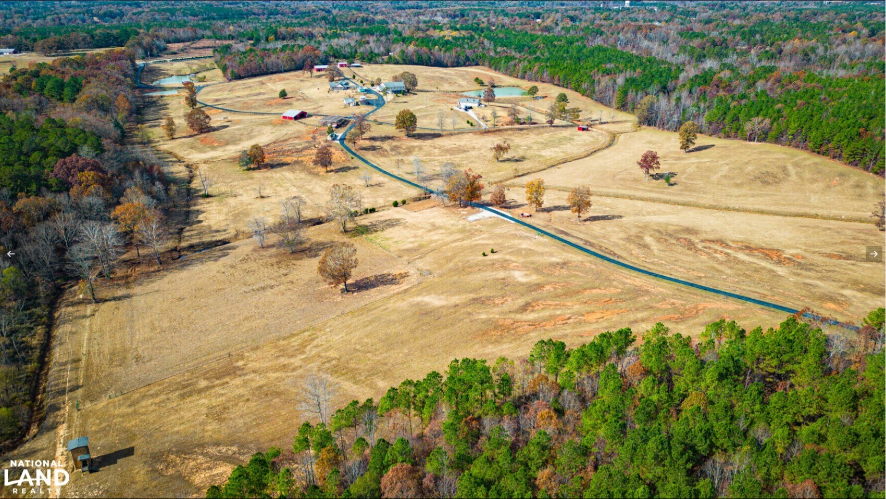

Rescue & Shelter
We take in dogs in need and give them a safe, comfortable home on the ranch while they wait for adoption.
Ripley, Mississippi • Tippah County
Lazy H Dog Rescue rescues, cares for, and rehomes dogs across Tippah County — giving every pup a second chance on our ranch.
Our Mission
Lazy H Dog Rescue is dedicated to rescuing abandoned, neglected, and homeless dogs throughout Tippah County, Mississippi. We provide safe shelter, medical care, and plenty of love on our ranch — then work tirelessly to match every dog with a loving, responsible forever family. Through rescue, rehabilitation, and community support, we believe no dog in our county should be left behind.
We take in dogs in need and give them a safe, comfortable home on the ranch while they wait for adoption.
Every dog receives the food, veterinary care, and attention they need to get healthy and ready for a new family.
We carefully match each rescue with the right adopter so the bond lasts a lifetime.

About Lazy H
Founded in 2025, Lazy H Dog Rescue sits on wide-open ranch land in Ripley, Mississippi. Our property gives rescued dogs something many of them have never had — space to play, fresh country air, and the time they need to recover and trust again.
We’re a small, local rescue with a big heart for Tippah County. Whether a dog arrives scared, sick, or simply lost, the ranch becomes their home base until the right family comes along.
Adoption
Adopting from Lazy H is simple. Fill out our adoption application and we’ll be in touch to talk about which of our dogs would be the perfect fit for your home and family.
Download and complete the Lazy H adoption application.
Email it back to us and we’ll reach out to get to know you.
Meet your match and welcome a rescued pup into your home.
Completed an application? Email it to lazyhdogrescue@gmail.com or call (662) 512-8584.
Get Involved
There’s more than one way to make a difference for the dogs of Tippah County.
Give a rescued dog their forever home and open up space for the next one in need.
Start adopting →Lend a hand on the ranch, help with care, or share our dogs with your network.
Email us →Share Lazy H with friends and family. The right home could be one share away.
Get in touch →Contact Us
Have a question about adopting, volunteering, or a dog in need? Reach out anytime — we’d love to hear from you.